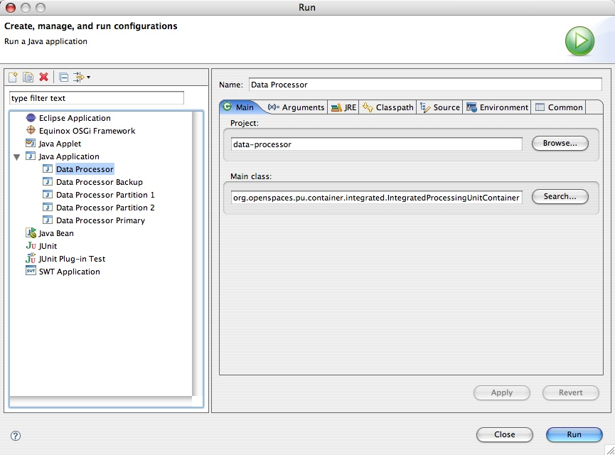
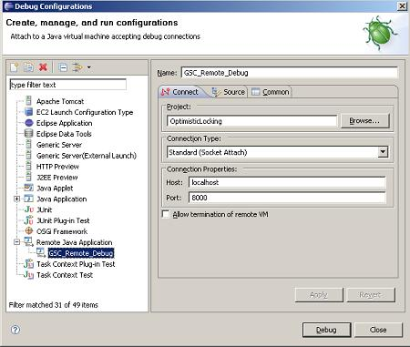

Section Summary: Explains how to run your processing unit inside your IDE or in unit tests
Overview
As part of your development process, you may want to run/debug your processing unit within your IDE, or create unit tests (with JUnit for example) to tests in isolation certain aspects of it.
The Integrated processing unit container allows you to run a processing unit within such "embedded" environment. It's implementation class is org.openspaces.pu.container.integrated.IntegratedProcessingUnitContainer.
The Integrated Processing Unit Container is built around Spring's ApplicationContext with several extensions relevant to GigaSpaces, such as ClusterInfo.
The Integrated Processing Unit Container runs directly in your IDE using its main() method, or can be started by another class in your code by using the ProcessingUnitContainerProvider abstraction.
Executable IntegratedProcessingUnitContainer
The IntegratedProcessingUnitContainer class provides an executable main() method, allowing the IDE to run it directly via a simple Java application configuration. The main() method uses the IntegratedProcessingUnitContainerProvider class and program arguments in order to create the IntegratedProcessingUnitContainer. The following is a list of all the possible program arguments that can be specified to the IntegratedProcessingUnitContainer:
| Option | Description |
|---|---|
| -config [configLocation] | Allows you to set/add a processing unit deployment descriptor location. Follows the Spring Resource Loader including ant style patterns. This parameter can be specified multiple times. The default is classpath*:/META-INF/spring/pu.xml. |
| -cluster [cluster options] | Allows you to control the ClusterInfo injected into the container and the runtime topology of the processing unit (Note that the integrated processing unit container can run multiple processing unit instances in the same JVM to more accurately emulate the behavior of the actual runtime environment). The following options are available (they are used automatically by any embedded space included in the processing unit):
|
| -properties [property file location] | Allows you to inject properties to the processing unit at deployment time. |
| -properties embed://[property1 name]=[property1 value];[property2 name]=[property2 value] | Allows you to directly inject properties to the processing unit at startup time. |
Example
To run a clustered PU with an embedded space with 2 partitions and a backup for each partition , having a separate eclipse configuration (and a hosting JVM) for each cluster member , have 3 run configuration each have the following:
-cluster schema=partitioned-sync2backup total_members=2,1 id=1
-cluster schema=partitioned-sync2backup total_members=2,1 id=2
-cluster schema=partitioned-sync2backup total_members=2,1 backup_id=1 id=1
-cluster schema=partitioned-sync2backup total_members=2,1 backup_id=1 id=2
Start these using the order above. The first 2 will be primary members and the other two will be backup members.
You can terminate any of the primary instances to test failover scenario.
| You can run the Integrated Processing Unit Container without actually specifying the instance id (and backup id). In this case, the container will automatically start all the relevant instances that form a complete cluster based on the total_members parameter provided. |
Using IntegratedProcessingUnitContainer in the IDE
The main usage of the IntegratedProcessingUnitContainer is to execute processing units in your IDE.
The following screenshot displays the Create, manage, and run configurations Eclipse dialog for executing the processor processing unit of the data example:

In the screenshot above, we run the data processor module using the integrated processing unit container from within the Eclipse IDE (we simply imported the Eclipse project provided with the example into our Eclipse workspace). There are no arguments provided in this example, which means that the integrated processing unit container will use its defaults. Since our project source includes a META-INF/spring/pu.xml file, it is automatically detected by the IntegratedProcessingUnitContainer class and used as the processing unit's deployment descriptor (since it's part of the processor module's classpath). The processor Eclipse project also has all the required libraries in its project definition. These include all the jars located under the GigaSpaces root>/lib/required directory, namely gs-openspaces.jar, gs-runtime.jar, commons-logging.jar and the Spring framework jars (all start with com.spring*), so the integrated processing unit container is running with these libraries.
| Classpath Settings of the IntegratedProcessingUnitContainer The IntegratedProcessingUnitContainer is a simple class that wraps the processing unit with Spring application context and makes all the proper initializations around it. Note that as with any other code you run within your IDE, you will have to manually include the classes your processing unit code depends on in your project classpath. In contrast, when running your processing unit on the GigaSpaces service grid or in standalone mode, all of the jars located under the processing unit's lib directory are automatically added to the classpath and GigaSpaces specific jar files (gs-runtime.jar and gs-openspaces.jar are added automatically). |
The following screenshot shows how to run a data processor instance with a partitioned cluster schema and ID 1, and the arguments that should provided in this configuration:

Starting an IntegratedProcessingUnitContainer Programmatically
The integrated processing unit container can be created programmatically using the IntegratedProcessingUnitContainerProvider class. This is very useful when writing unit and integration tests (though Spring's own mock library can also be used for testing using pure Spring application context).
Here is an example of using a IntegratedProcessingUnitContainerProvider in order to create one:
IntegratedProcessingUnitContainerProvider provider = new IntegratedProcessingUnitContainerProvider(); // provide cluster information for the specific PU instance ClusterInfo clusterInfo = new ClusterInfo(); clusterInfo.setSchema("partitioned-sync2backup"); clusterInfo.setNumberOfInstances(2); clusterInfo.setInstanceId(1); provider.setClusterInfo(clusterInfo); // set the config location (override the default one - classpath:/META-INF/spring/pu.xml) provider.addConfigLocation("classpath:/test/my-pu.xml"); // Build the Spring application context and "start" it IntegratedProcessingUnitContainer container = provider.createContainer(); // ... container.close();
Remote Debugging
The Java Debugger
The Java Debugger (jdb) is a dynamic, controlled, assignment-based debugging tool. It helps find and fix bugs in the Java language programs both locally and on the server. To use jdb in a Java application you must first launch it with debugging enabled and attach to the server from the debugger through a JPDA port (Default port is 1044).
The default JPDA options for Java applications are as follows:
-Xdebug -Xnoagent -Xrunjdwp:transport=dt_socket,server=y,suspend=y,address=8000
The jdb parameters specify the way debugger will operate. For instance transport=dt_socket instructs the JVM that the debugger connections will be made through a socket while the address=1044 parameter informs it that the port number will be 1044. Similarly, if you substitute suspend=y , the JVM starts in suspended mode and stays suspended until a debugger is attached to it. This may be helpful if you want to start debugging as soon as the JVM starts.
Debugging GigaSpaces Runtime components
Debugging GigaSpaces runtime components (GSC/GSM/Lookup Service/GSA/Jini TX Manager) is no different than debugging any other Java remote application. You need to make sure to launch it with the required debugging arguments and attach a debugger. In the case of GigaSpaces, you need to add these arguments to the startup script. GigaSpaces comes with several launch scripts (*.sh and *.bat) under GigaSpaces root/bin folder.
1. Add the following variable IDE_REMOTE_DEBUG and set the EXT_JAVA_OPTIONS to use it:
If you would like to specify a specific listening port, use the address parameter:
set IDE_REMOTE_DEBUG=-Xdebug -Xnoagent -Xrunjdwp:transport=dt_socket,server=y,suspend=y,address=8000
2. Next, run the relevant GigaSpaces runtime component:
Make sure you see the Listening for transport dt_socket at address message:
D:\gigaspaces-xap-premium-7.0.1-ga\bin>gsc.bat
Listening for transport dt_socket at address: 8000
3. Open your eclipse and setup a remote debug configuration:

Make sure you place the right host name and port.
4. Click the Debug button.